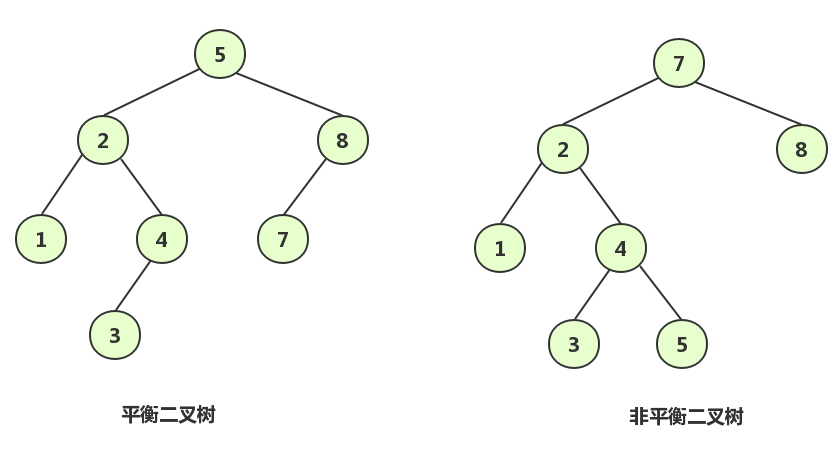

本文为王争老师在『极客时间』中的课程《数据结构与算法之美》的学习笔记，想要学习原文的同学购买相关课程学习。如有侵权请联系作者删除。
在学习完二叉查找树后我们了解到它支持快速插入、删除、查找操作，各个操作的时间复杂度跟树的高度成正比，理想情况下，时间复杂度为O(logn)。但是随着对二叉查找树的不断更新，树的高度可能远大于O(logn)从而导致操作效率的下降。当二叉查找树只有左子树或只有右子树时，二叉查找树退化成为链表，时间复杂度为O(n)。为了避免解决上述问题，我们学习平衡二叉查找树。
什么是平衡二叉查找树
一颗平衡二叉树要求二叉树中的每个节点的左子树和右子树的高度最多相差1。如完全二叉树、满二叉树都是平衡二叉树。如下图左边的树即为平衡二叉树，右边的树不为平衡二叉树。

平衡二叉查找树不仅需要满足平衡的条件，而且需要满足二叉查找树的条件。最经典的平衡二叉查找树为AVL树。
平衡二叉查找树的性质
- 左子树与右子树高度之差绝对值不超过1
- 树的每个左子树和右子树都是平衡二叉查找树
- 每个节点都有一个平衡因子，任何一个节点的平衡因子为-1、0或者1（每一个节点的平衡因子 = 右子树高度 - 左子树高度）
平衡二叉查找树的生成
由于平衡二叉查找树既要保证平衡性质又要保证查找的性质，那么该如何生成一颗平衡二叉查找树呢？
由于平衡二叉查找树首先一颗二叉查找树，我们需要根据二叉查找树的规则进行插入